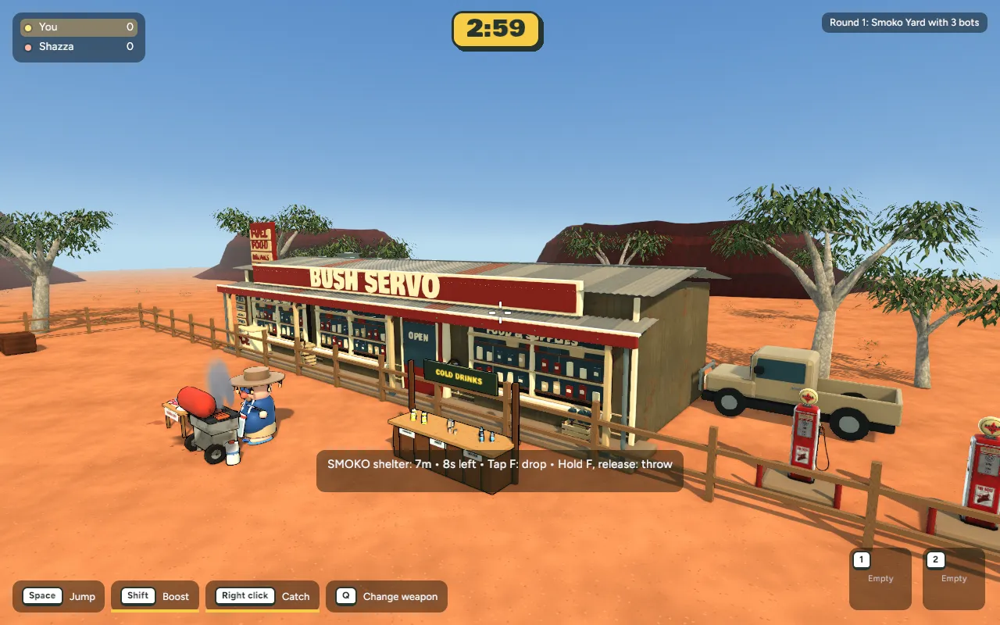

Bush Servo: closer to the concept's art style
29 October 2026 · First foliage and frontage pass · Actual native game captures · Ready for review
Solid tree-canopy blobs replaced with finer, open eucalyptus leaf sprays. Smooth pale trunks use a compact Poly Haven eucalyptus bark scan. The servo now has stocked window displays, a service board, crates, oil cans, a coiled air hose, veranda rafters and lamps, and freezer details. Rock surfaces have restrained texture variation.
Built through the connected Blender MCP. Existing Poly Haven timber and Sketchfab fuel-pump resources are retained. Additions to the frontage are beyond the playable fence; the eight existing boulder collision bounds are verified unchanged.
Reference direction — concept, not implemented

This pass addresses tree silhouettes, bark and shop detail. The reference still has much richer ground cover, irregular stone borders, road shoulders, distant scenery and atmospheric lighting. Those remain further work.
Arena, foliage and shadows
Shopfront at closer range
Moving-camera check

75 actual game frames, about five seconds. Native rendering; this is not a Blender render. The scripted Smoko delivery finishes at +100 with no remaining carry.
Matched local performance
| View | Mean frame time, before → after | Change | p95, before → after |
|---|
| overview | 8.206 → 8.751 ms | +6.6% | 9.815 → 10.883 ms |
| servo | 8.491 → 8.572 ms | +1.0% | 10.696 → 10.881 ms |
| frontage | 7.804 → 7.975 ms | +2.2% | 12.321 → 9.795 ms |
600 wall-clock intervals per view, same Mac, native binary, cameras and 1280×800 settings. Baseline assets temporarily restored from the backup and current assets restored afterward. Export refinement reduced the final after costs. Mean changes are +0.08–0.55 ms; native averages remain about 114–125 FPS. This does not establish browser or guest-device performance.
Combined changed models: 145,698 → 172,486 triangles; 27 → 26 material batches; 13.22 → 15.65 MB on disk. Removing unused UV data saved 2.63 MB from the new export. Decoded image data grew about 4.54 MB. No additional lights or per-frame vegetation simulation.
Verification and limits
Actual native Smoko loads, matched captures, animated drift, delivery scoring and a Backyard smoke capture pass. GLB buffers, embedded PNGs, Python authoring syntax and existing shared boulder bounds validate. No Rust gameplay source changed, so native/browser code was not rebuilt. Existing browser files remain on the previous reviewed version. This asset pass is not committed or published.
The foliage is static. Finer distant leaves still need browser/device review for aliasing. The map has not yet achieved the reference's complete surface richness; next focus should be ground-cover clusters and irregular stone/soil transitions, then sky and distant scenery.
Checkpoint, exact changes and rollback · Backyard smoke capture · Eucalyptus bark source and author
Test locally
cd /Users/marcus/Claude/australian-bbq/rust
~/.cargo/bin/cargo run -p bbq_app --release -- --menu
Choose Maps / Game modes → Smoko Yard (Bush Servo).